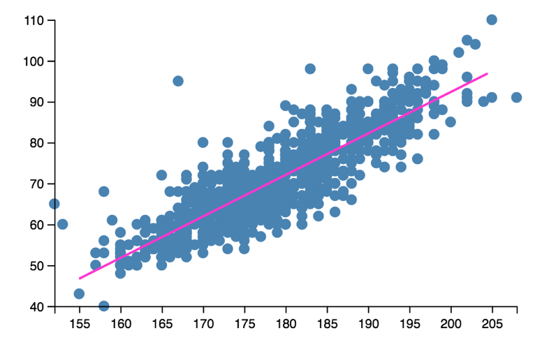

Clojure for Machine Learning
@henrygarner
CLOJURE FOR STATISTICAL INFERENCE & PREDICTIVE ANALYTICS WITH TRANSDUCERS AND VISUALISATION TOO!
CLOJURE FOR STATISTICAL INFERENCE & PREDICTIVE ANALYTICS WITH TRANSDUCERS AND VISUALISATION TOO!
“If you can convince an engineer they're doing machine learning, you can get them to do anything”
Josh Wills, Director of Engineering at Slack
“Data Scientist (n.): Person who is better at statistics than any software engineer and better at software engineering than any statistician.”
Josh Wills, Director of Engineering at Slack
#sorrynotsorry
Contents
- Bandit testing
- Inference & significance
kixi.stats
- Regression models
- Goodness of fit
redux
- Neural networks
- Feature learning
cortex
- H H T H T
- T H H H T
- H H H H H
- H H H H H H H H H H H H H H H
♥️
Reagent
interactive UIs
thi.ng/geom-viz
SVG graphs
jStat
JavaScript distributions
Distribution over k
Distribution over k
Distribution over p
(def trials
{:trial-1 {:n 10 :k 5}
:trial-2 {:n 20 :k 10}}
(defn bayes-bandit
[trials]
(let [score (fn [{:keys [n k]}]
(sample-beta 1 :alpha (inc k) :beta (inc (- n k))))]
(key (apply max-key (comp score val) trials))))
Beware
- Ensure trials are independent
- Test users, not visits
- Has the variation been seen?
- Assigned variations may not be active variations
- Don't call too early
- Conversion may take a day or longer. Wait and see.
- Not a panacea
- A sensible prior will stabilise early fluctuations
(def trials
{:trial-1 {:n 10 :k 5}
:trial-2 {:n 20 :k 10}}
(defn bayes-bandit
[trials]
(let [score (fn [{:keys [n k]}]
(sample-beta 1 :alpha (inc (+ k 10))
:beta (inc (+ (- n k) 40))))]
(key (apply max-key (comp score val) trials))))
(transduce (map inc) + (range 10))
- Init
- Step
- Complete
(fn +'
([] 0) ;; init
([acc x]
(+ acc x)) ;; step
([acc] acc)) ;; complete
KIXI.STATS
https://github.com/mastodonc/kixi.stats
- Mean
- Variance
- Standard deviation
- Covariance
- Correlation
- Simple linear regression
"Awkward-sized data"
https://www.theguardian.com/sport/datablog/2012/aug/07/olympics-2012-athletes-age-weight-height
{:sport "Swimming",
:age 27,
:sex "M",
:birth-place "Towson (USA)",
:name "Michael Phelps",
:bronze 0,
:birth-date "6/30/1985",
:gold 2,
:weight 88,
:silver 2,
:height 193}
(require '[kixi.stats.core :as kixi])
(->> (data-source "athletes.txt")
(transduce (map :height) kixi/mean))
;; => 1603855/9038
(->> (data-source "athletes.txt")
(transduce (map :height) kixi/standard-deviation))
;; => 11.202506235734145
(require '[kixi.stats.core :as kixi])
(def rf
(kixi/correlation-matrix {:height :height
:weight :weight
:age :age}))
(->> (data-source "athletes.txt")
(transduce identity rf))
;; {[:height :weight] 0.7602753595140576,
;; [:height :age] 0.0835619870171009,
;; [:weight :height] 0.7602753595140576,
;; [:weight :age] 0.1263794369985025,
;; [:age :height] 0.0835619870171009,
;; [:age :weight] 0.1263794369985025}
(require '[kixi.stats.core :as kixi])
(def rf
(kixi/correlation-matrix {:height :height
:weight :weight
:age :age}))
(->> (data-source "athletes.txt")
(transduce (filter swimmer?) rf))
;; {[:height :weight] 0.8649145683086642,
;; [:height :age] 0.3011551185677323,
;; [:weight :height] 0.8649145683086642,
;; [:weight :age] 0.32150444584208426,
;; [:age :height] 0.3011551185677323,
;; [:age :weight] 0.32150444584208426}
\[{y = ax + b}\]
\[{Fahrenheit = 1.8 * Centigrade + 32}\]
(require '[kixi.stats.core :as kixi])
(def rf
(kixi/simple-linear-regression :height :weight))
(->> (data-source "athletes.txt")
(transduce (filter swimmer?) rf))
;; [-1286496024/11650283 11809306/11650283]

http://www.topendsports.com/athletes/swimming/spitz-mark.htm
(def fy :weight)
(def fx :height)
(def regression
(stats/simple-linear-regression fx fy))
(def data (filter swimmer? (data-source "athletes")))
(let [[b a] (transduce identity regression data)
predict (fn [x]
(double (+ (* a x) b)))]
(predict 185))
;; 77.09903579166274

(def fy :weight)
(def fx :height)
(def estimate-error
(stats/standard-error-prediction fx fy 185))
(def data (filter swimmer? (data-source "athletes")))
(let [[b a] (transduce identity regression data)
std-e (transduce identity estimate-error data)
confidence-interval (fn [x]
(let [estimate (double (+ (* a x) b))]
[(- estimate (* std-e 1.94))
(+ estimate (* std-e 1.94))]))]
(confidence-interval 185))
;; [65.97046903896646 88.22760254435903]
[69.97 ≤ 79 ≤ 88.22]
[69.97 ≤ 79 ≤ 88.22]
✅
redux
https://github.com/henrygarner/redux
pre-steppost-completefuse- + more!
(def rf
(fuse {:mean kixi/mean
:sd kixi/standard-deviation}))
(transduce (map :height) rf (data-source "athletes.txt"))
;; => {:mean 1603855/9038, :sd 11.202506235734145}
R-square
\[{{R^2 = 1 - \frac{var(e)}{var(Y)}}}\]
R-square
(defn residual [fy-hat fy]
#(- (fy-hat %) (fy %)))
(defn r-square [fy-hat fy]
(pre-step variance (residual fy-hat fy))
(pre-step variance fy)
)
R-square
(defn residual [fy-hat fy]
#(- (fy-hat %) (fy %)))
(defn r-square [fy-hat fy]
(fuse {:var-e (pre-step variance (residual fy-hat fy))
:var-y (pre-step variance fy)})
)
R-square
(defn residual [fy-hat fy]
#(- (fy-hat %) (fy %)))
(defn r-square [fy-hat fy]
(post-complete
(fuse {:var-e (pre-step variance (residual fy-hat fy))
:var-y (pre-step variance fy)})
(fn [{:keys [var-e var-y]}]
(- 1 (/ var-e var-y)))))
R-square
(def fy :weight)
(def fx :height)
(def regression (kixi/simple-linear-regression fx fy))
(def data (filter swimmer? (data-source "athletes")))
(let [[b a] (transduce identity regression data)
estimate (fn [x] (+ (* a x) b))
goodness-of-fit (r-square (comp estimate fx) fy)]
(double (transduce identity goodness-of-fit data)))
;; => 0.748
\[{{\theta = (X^TX)^{-1}X^Ty}}\]
;; core.matrix includes
(require '[clojure.core.matrix :refer [mmul transpose]]
'[clojure.core.matrix.linear :refer [solve]])
(defn normal-equation [x y]
(let [xt (transpose x)
xtx (mmul xt x)
xty (mmul xt y)]
(mmul (solve xtx) xty)))
(defn features [& fns]
(apply juxt fns))
(def fx (features (constantly 1.0) :height))
(def fy :weight)
(let [coefs (normal-equation (map fx data) (map fy data))
estimate (fn [x] (mmul (transpose coefs) x))
goodness-of-fit (r-square (comp estimate fx) fy)]
(transduce identity goodness-of-fit data))
;; 0.7480772104725628
(defn dummy-mf [athlete]
(if (= (:sex athlete) "F") 0.0 1.0))
(def fx (features (constantly 1.0) :height dummy-mf))
(def fy :weight)
(let [coefs (normal-equation (map fx data) (map fy data))
estimate (fn [x] (mmul (transpose coefs) x))
goodness-of-fit (r-square (comp estimate fx) fy)]
(double (transduce identity goodness-of-fit data)))
;; 0.8022246027673994
“Either building, or contributing to, or forming a nice Clojure-first solution for deep learning would be huge”
Eric Weinstein, Clojure for Machine Learning
Cortex
Loss function
Loss functions
- MSE
- Cross Entropy
- Softmax
- Log Likelihood Softmax
Optimisation function
Optimisation functions
- Gradient descent
- Newton's method
- Adam
- Adadelta
(def summary-stats
(fuse {:mean kixi/mean
:sd kixi/standard-deviation}))
(defn normalizer [& args]
(let [normalize (fn [x {:keys [mean sd]}]
(/ (- x mean) sd))
summarise (fn [k] [k (pre-step summary-stats k)])]
(post-complete (fuse (into {} (map summarise) args))
(fn [stats]
(map #(merge-with normalize % stats))))))
(def normalize
(transduce identity (normalizer :height :weight) data))
(sequence (comp normalize (map fx)) data)
;; ([1.0 -1.3898594098622594 0.0] [1.0 1.2798851553621058 1.0] ...)
(def n-epochs 100)
(def batch-size 1)
(def loss
(opt/mse-loss))
(def optimiser
(opt/newton-optimiser))
(def fx (features :height dummy-mf))
(def fy (features :weight))
(let [xs (vec (sequence (comp normalize (map fx)) data))
ys (vec (sequence (comp normalize (map fy)) data))
network (layers/linear-layer 2 1)
trained (net/train network optimiser loss
xs ys batch-size n-epochs)
predict (fn [x] (ffirst (net/run trained [x])))
goodness-of-fit (r-square (comp predict fx) (comp first fy))]
(transduce normalize goodness-of-fit data))
;; 0.8021682807900807
(defn fy [i]
(cond
(zero? (mod i 15)) [0.0 0.0 0.0 1.0]
(zero? (mod i 5)) [0.0 0.0 1.0 0.0]
(zero? (mod i 3)) [0.0 1.0 0.0 0.0]
:else [1.0 0.0 0.0 0.0]))
(defn fx [i]
(map #(if (bit-test i %) 1.0 0.0) (range 10)))
(encode 4)
;; (0.0 0.0 1.0 0.0 0.0 0.0 0.0 0.0 0.0 0.0)
(encode 9)
;; (1.0 0.0 0.0 1.0 0.0 0.0 0.0 0.0 0.0 0.0)
\[{x_{feature} = [year, year^2, ... , year^{11}]}\]
(require '[cortex.nn.core :as core]
'[cortex.nn.layers :as layers])
(defn create-network
[]
(let [network-modules [(layers/linear-layer 10 100)
(layers/logistic [100])
(layers/linear-layer 100 4)
(core/stack-module network-modules)))
1 2 Fizz 4 Buzz Fizz 7 8 Fizz Buzz 11 Fizz 13 14 FizzBuzz 16 17 Fizz 19 Buzz Fizz 22 23 Fizz Buzz 26 Fizz 28 29 FizzBuzz 31 32 Fizz 34 Buzz Fizz 37 38 Fizz Buzz 41 Fizz 43 44 FizzBuzz 46 47 Fizz 49 Buzz Fizz 52 53 Fizz Buzz 56 Fizz 58 59 FizzBuzz 61 62 Fizz 64 Buzz Fizz 67 68 Fizz Buzz 71 Fizz 73 74 FizzBuzz 76 77 Fizz 79 Buzz Fizz 82 83 Fizz Buzz 86 Fizz 88 89 FizzBuzz 91 92 Fizz 94 Buzz Fizz 97 98 Fizz Buzz
We're doomed
(A sample of) things I skipped
- Significance tests
- t-distribution
- Classifier evaluators
- Cross-validation
- Recurrent NNs
- LSTM NNs
- …
Further reading
- http://joelgrus.com/2016/05/23/fizz-buzz-in-tensorflow/
- Fizzbuzz in Tensorflow
- http://github.com/thinktopic/cortex
- Examples of deeper neural networks
- https://deeplearning4j.org/
- Java Deep Learning
- https://www.chrisstucchio.com/
- Probability and statistics
- http://www.wiki.cl.cam.ac.uk/rowiki/NaturalLanguage/ALTA
- ALTA Institute
If you liked this…
http://cljds.com/cljds-book | http://cljds.com/cljds-amzn

Thanks!
https://github.com/henrygarner/cljx-december-2016
Henry Garner
@henrygarner